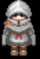

Instructions
The objective of this game is for you, the player, to control Donald Trump and navigate him to the presidency.
The first part of the game
is the Republican primary where Donald needs to collect delegates (in the form of flags).
If Donald can get to 1237 delegates, he wins the Republican
nomination and gets to the next part of the game: The chase for the White House.
The chase for the White House will involve Donald
collecting electoral college votes from the same states. If Donald can get to 270, you win the game!
Move Donald with the arrow Keys
You start with 4 health points.
There's a cannon in the middle with an enemy wielding it. The enemy is dependent
on your current score and progression - Marco Rubio, Ted Cruz, and Hillary Clinton.
The cannon will rotate continuously and fire bullets.
If you(Trump) gets hit by a bullet, you will lose a health point.
If you lose all health points then you lose the game.
There are additional enemies as well.
They will appear as you progress through the game and follow him. If they get to
Donald, Donald will lose one health point.
These enemies are the assassin sent by the Establishment
 and the cartel member 
They are also characters that have special abilities that appear during the game.
One such character is Ben Carson.
If you catch to Ben Carson, he will heal you and you will get one health point back.
Another character is Ivanka Trump.
When Ivanka is active, Donald will get 10% more in states with regards to electors and delegates.
The first special character is Jeb Bush.
The second special character is the reporter. The reporter spreads lies about you and decreases the number of delegates you can collect from each state.